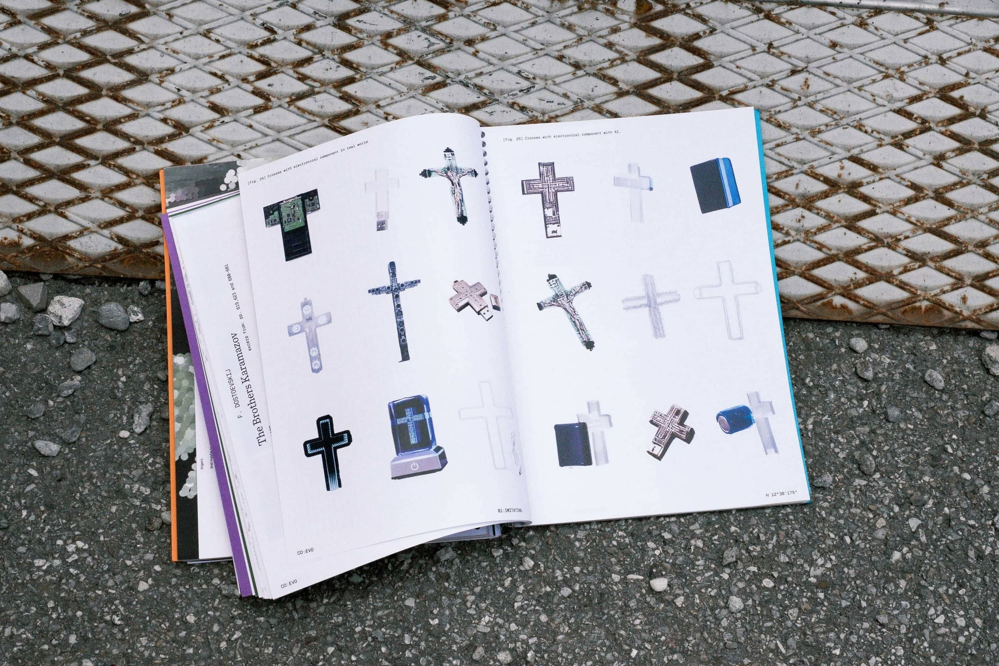
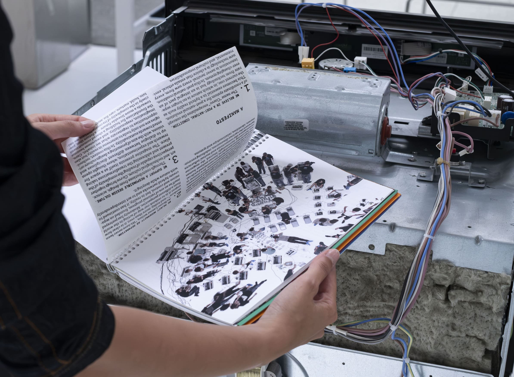
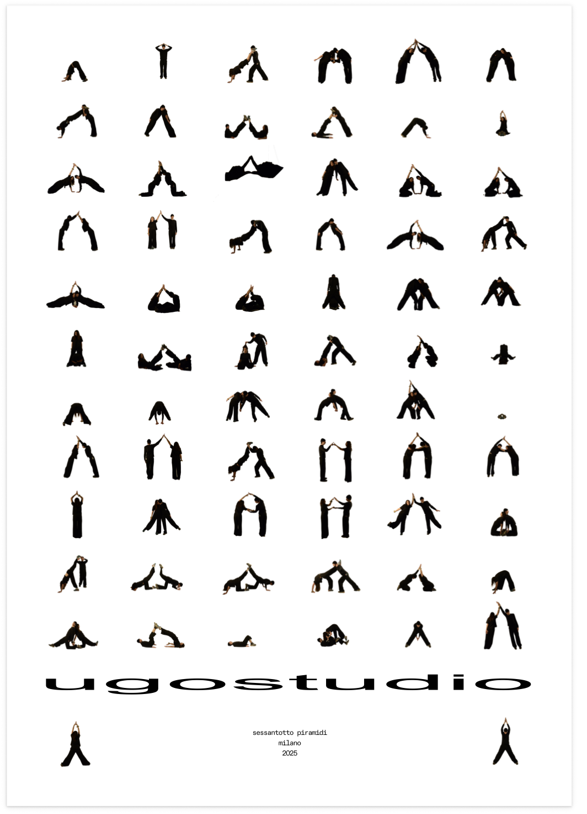

Giorgia Casadei
2025
based in milan, Italy.
graduated with a bachelor’s degree in Communication Design at Politecnico di Milano
currently pursuing the master’s degree.
half of ugostudio.
@giorgiacasadeii
giorgiacasadei09@gmail.com